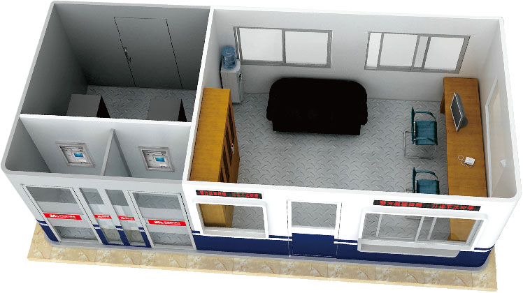

“公安便民亭”服务系统
“智慧城市”服务亭
“公安便民亭”是由中警科技开发的专利项目，由盈澜科技授权运营和管理，既有利于公安民警办公条件改善，又有利于广大百姓生活方便的一个实质性项目。
“公安便民亭”一边是治安岗亭，另外一边是自助银行服务区，外观美观大方，采用专业安防材料，安全级别得到国家公安部认证；同时，能够提供24小时存取款、转账、查询、生活缴费等服务。可为治安、交通、特警、武警等执勤使用，极大地保障人民财产的安全。
盈澜科技为“建设平安中国、构建和谐社会”贡献绵薄之力，特筹巨资推出“十万警亭赠公安”活动。现第三代产品已大规模捐赠给各地公安机关。
置放地点：交通枢纽、商业中心、大型社区、文化体育中心、医院、高校等公共场地。
升级方便：安防信息化工程，智慧城市互动终端工程。
“公安便民亭”分为两个部分，一边是蓝色标示的治安警务室，另外一边是银行自助服务区。它不仅有利于改善民警的办公条件和城市形象，而且大力促进城市的平安建设和智慧建设，为广大群众提供更安全、更便捷的服务。
公安便民亭尺寸可根据需要进行制作
单机标准尺寸：
4000*3500*3100
双机标准尺寸：
5500*3500*3500

安防信息化系统 : 天网工程、SOS远程报警系统、北斗卫星组网、中警APP（警民通）。
办公家具 : 衣帽挂架，椅子，饮水机，办公桌，便民打气筒，雨伞。
数字声控骨传导自动通讯系统 : H1M2骨传导通讯系统两套，只识别人类发出的声音，可以兼容公安系统任何对讲机。
匹冷暖独立中央工业空调 : 2匹格力中央空调及来电自动重启, 盘管式中央工业空调，客户交易区和设备操作间均设有送风口、回风口，整体能量损失少，散冷、散热均匀，冷、热交换率高。
内部结构 : 三面开窗，通透式设计，视野开阔，选用高档型材模块化组装式窗户；铝板吊顶，铝塑板装饰墙面，高强度复合木地板，环境美观舒适；警务室配备肯德基型材门，安装自动定位闭门器，开关角度自由调节；墙面安装两对6勾型材挂衣架，充分考虑人性化设计。可选配1匹冷暖独立室内挂机空调，开关自由，环保节能。
北斗卫星通讯系统
亭体结构及安全性能符合《银行自助服务亭技术要求(GA1003-2012标准)》。每台自助设备均具有独立的客户交易区，设备操作间满足银行自助设备的工作和维护需求。整个亭体外观美观大方，彰显高档，广告效果极佳。
| 亭体结构： | 采用3mm钢板，中间60×60方钢管，底座100×50槽钢，60×60角钢；客户交易区（包括肯德基门）5+5+2夹胶钢化玻璃，形成主体框架。 |
| 设备操作间： | 五面（四周、顶部）外层3mm钢板，第二层高强钢筋砼，第三层防切割网线，第四层改性酚酫防火保温隔热材料，第五层电解钢板，增加切割难度；地面采用高级防静电PVC塑胶地板；配备折叠式活动楼梯，方便开展维护工作。 |
| 客户交易区： | 顶部采用高级金属材料吊顶装饰，高级金属吸顶灯，设置铝合金空调通风口；玻璃采用防窥视设计，可有效保护客户操作的私密性；地面采用高级防静电PVC塑胶地板；可选配手动肯德基门或自动平移门。 |
| 灯箱广告： | 全封闭灯箱广告设计，顶部进口亚克力板丝印灯箱，亭体两侧设置广告灯箱，灯箱采用5mm耐力透明板。灯光采用晶片LED灯杯式光源，灯光度分布均匀，光束低使用寿命长。电源可根据季节变化设置自动开启、关闭时间。可根据客户需求定制。 |
| 亭体漆面： | 表面处理采用富锌环氧佛碳底漆、高级金属烤漆工艺面漆。 |
| 防尾随模块： | 实现服务“唯一性”，只允许一人或一批次人员交易，设备通过探测等手段识别进入操作空间人的情况，联动门禁控制系统，对门体进行开启与关闭的控制，实现防尾随。保证客户操作安全性。 ①在设定时间内启动滞留检测模块，提醒客户不要过长占用自助设备，提高自助设备利用率。 ②在设定时间内启动防尾随强制解除模块，管理员可强制开门，避免有人“恶意“长时间独占交易。 ③如果有人在许可的时间内正常操作，外面按钮开门，将启动外部语音提示模块，提示“系统正忙，请稍候”，彰显人性化设计。 ④自助区无人时可随时进入交易。设备使用中或等待状态下，遇断电可实现手动开门，电力恢复后设备自动复位。客户拉门未进入“自助区”内交易防尾随系统不启动，可防止客户误操作导致暂不能为其他客户服务。 ⑤“防宠物”设计，只有客户在操作过程中才启动“防尾随”。独特的无人检测延时时间设定，确保防护的智能性。 |
| 门禁控制模块： | 双门禁电锁及智能检测控制器。 ①客户交易区手动肯德基门可选用280公斤磁力锁，包括防尾随锁（远程控制）。 ②设备操作间（加钞间）采用国产加强型钢质防盗门（甲级门B级锁，单门双锁）。可选智能远程检测控制器，指纹密码锁（可设置指纹、密码、智能卡的开锁模式)。 |
| 音频控制模块： | 广播功能背景音乐、分时段提示音等自动播出，根据进出门状态及工作状态，提示音自动播出，3路语音播放：进门语音、出门语音、滞留语音。 |
| 人员滞留检测模块： | 自助区人员操作时间过长或闲杂人等在交易区内，系统可自动检测，并发出提示语音，提示其离开。 |
| 弱电标准机柜： | 设备操作间内配置弱电标准机柜，放置弱电电源及智能化控制设备。也为网路设备预留放置空间。 |
| 报警探测器模块： | 主要针对银亭安全，装有红外报警探测器、玻璃破碎探测器、震动探测器、感烟探测器、防切割线圈，可防止企图通过暴力（钻、打击、锯等）进入保护门、窗或亭顶等，遇有此类情况可在亭体内通过报警 输出组件报警，并将信号传输至中心报警。 |
| 音频输入输出模块： | 高灵敏度监听头，多声道功放，顶内扬声器。 |
| 环境检测模块： | 水位预警和排水系统等，浸水传感器遇有水情立即报警并传输至中心。 |
| 配电箱： | 充分考虑用电量设计电缆规格,使用国标线缆.主空开、分空开设计合理,各类开关控制器布放合理、进亭体电缆不小于6平方,电缆（全部采用国标金龙羽品牌产品）。采用模块化设计,漏电自动保护，接地电阻小于4欧姆的安全接地设计。 |
| 避雷模块： | 网络防雷、电器防雷、亭体防雷，符合二级防雷标准。 |
“公安便民亭”服务系统
“智慧城市”服务亭
《国家知识产权局》授权专利证书
“智慧社区服务亭”系统融合了互联网+、多媒体技术、自助式电子商务技术和银行卡支付技术等的新型信息系统，可以将来自政府、企业或社区的各种服务通过规范和整合后提供给公众。
1.代收服务：水、电、气、有线电视、宽带、手机等各种费用代缴、及公交卡充值等；
2.订票服务：预定或代购飞机票、火车票、动车票、长途汽车票、影剧院票等；
3.报刊服务：提供指定范围内的各类报刊杂志的零售；
4.中介服务：旅游、保险、家政、家教、保姆、保洁、婚庆、房屋出租、维修等中介代理；
5.中转服务：为快递、物流提供配送、中转服务。
1.通过安装高清监控探头，配合社会治安综合治理，加强宜居城市安全网建设；
2.协助政府开展普法宣传以及流动人口管理等工作；
3.协助政府发布各种公告，及时通知到户，提高居民应对能力。
信息传播：及时发布政府公共资讯，传播公共信息及国际、国内重大新闻，宣传党和国家的方针政策。
互动终端：积极支持各地政府智慧城市的建设。
智慧城市，我们可以做什么？
用科技解决传统问题，提高治安水平，降低犯罪率，让百姓生活更加智能和便捷。
城市内部服务亭终端标配
天网高清探头
SOS远程报警系统
智能互动屏（多点触控触摸屏）
音频控制系统
LED显示屏
USB应急充电系统
避雷模块
广告灯箱或P4、P5显示屏